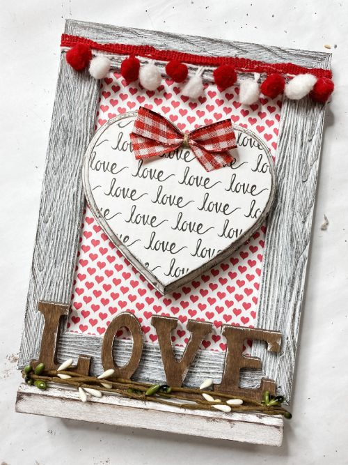

There’s something grounding about making things from scratch. I love crafting — from handmaking cards to crocheting thoughtful gifts. The process calms me, excites me, and reminds me that the best things take time. For me, DIY is both creative therapy and a love language.